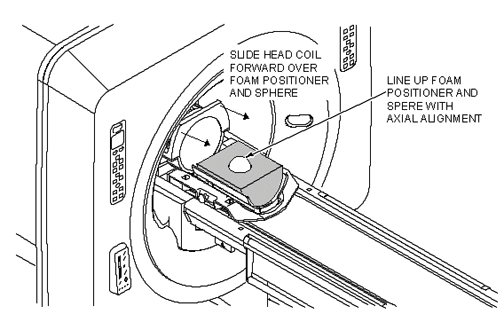

Operating Documentation
Direction 5133315-3, Rev# 14
Signa EXCITE HD 1.5T Service Methods
Module Version 1.0, Version Date 5/3/07
Operating Documentation |
| Required Persons | Preliminary Reqs | Procedure | Finalization |
|---|---|---|---|
| 1 |
This procedure assumes that you have just finished the Group Delay Procedure.
| NOTE: | All EPI calibration procedure commands are case-sensitive. Failure to type the commands as shown in this procedure will cause the scripts to fail. |
| ||||
| POISON HAZARD! | ||||
| THE PHANTOM CONTAINS NICKEL, A SUSPECT CARCINOGEN. | ||||
| DO NOT INGEST. DISPOSE OF AS A HAZARDOUS WASTE ACCORDING TO STATE AND FEDERAL REGULATIONS. |
| NOTE: | Possible equipment damage. Completely remove the quad head coil from the cradle. Failure to do so will damage the head coil T/R network. |
| Condition | Reference | Effectivity |
|---|---|---|
- | - | |
- | - |
At the operator work space, prepare the system for a Body B0 Dither scan using the Service Protocols procedure located on the service methods CD-ROM see.
Place the EPI Foam phantom holder and 100 mm sphere in the Head Coil as shown in Illustration 1. Landmark on the center of the Head Coil, adjust positioner / sphere to axial alignment light, and press <ADVANCE TO SCAN> button.
Illustration 1: EPI PHANTOM POSITIONING - HEAD COIL

[Auto Prescan]
[Modify CVs] and verify the cv pw_gxwl2 = 0 (for the first scan only). A total of 8 scans will be taken. For each scan the cv pw_gxwl2 will be changed based in Table 1. Verify the cv exp corresponds to the appropriate pw_gxwl2 value for your equipment type.
Table 1: CV SETTING FOR PW_GXWL2
| pw_gxwl2 (uS) |
| 0 32 64 96 128 160 192 224 256 288 320 352 384 416 448 480 512 544 576 608 640 672 704 736 768 800 832 864 896 928 |
Press [Scan]. The system scans and creates a total of 3 image plots, ( one for each plane). Compare the plots to the Typical Plot Examples Illustration 2 and Illustration 3. If plots look similar to the typical plots shown, continue on to the next step. Otherwise see the Troubleshooting Tips Illustration 4.
Illustration 2: EXAMPLE TYPICAL (GOOD) B0 PLOTS

Illustration 3: UNDERSTANDING EPI CALIBRATION PLOTS

Illustration 4: EXAMPLE OF (BAD B0) PLOTS WITH TROUBLESHOOTING TIPS

After scan #1: execute the command b0 d<Enter> from the right (non-TPS) command window. This generates the b0vectors.dat and delay .esp files. For scans #2-30 if the plots are acceptable, execute the command b0<Enter> (Not b0 d, as this will delete your previous work). This will append data to the files b0vectors.dat and delay.esp. Go back to step 2 of this procedure until all 30 scans are complete.
After scans for all values for pw_gxwl2 setting have been collected, execute the following from the C Shell window: fitepic<Enter> (Accept the default field name of b0vectors.dat when prompted). This creates the file b0_dither.cal. (This takes several minutes per axis to run, so be patient)
The program then analyzes the b0 vector data. As each axis is analyzed, a series of numbers is output to the screen. Record the Max. Error value for each axis for future ref.
From the right C Shell window (non-TPS), Rename the b0vectors.dat, delay.esp, b0dither.cal and plot files to make them Head specific files before proceeding to Group Delay calibration:
mv b0vectors.dat b0vectors.dat.head<Enter>
mv delay.esp delay.esp.head<Enter>
mv b0_dither.cal b0_dither.cal.head<Enter> (Type carefully; this is the file the psd uses!)
mv b0vectors.dat.xyz b0vectors.dath.xyz<Enter>
mv delay.esp.xyz delay.esph.xyz<Enter>
| NOTE: | For TwinSpeed, remember that these actions move linked files with extensions, .WHOLE and .ZOOM. |
From the right command window, display plots of the b0vectors.dat on the desk top by typing each plot command. (The plots may slope considerably or have a high offset, but each axis plot should look fairly smooth. For example, see Illustration 2-5).
Illustration 5: EXAMPLE B0 DITHER DATA PLOT

pl -b0vectors.dath.xyz q<Enter> (Plots the body b0 dither Vs echo spacing for all 3 axes.)
-delay.esph.xyz q<Enter> (Plots the body gldelay Vs echo spacing for all 3 axes.)
-delay.fst.xyz q<Enter>
Re open the (TPS) command window and type:
==> pcdef<Enter >(This releases the TPS.)
==> logout<Enter> (This Logs the command Window out of the TPS.)